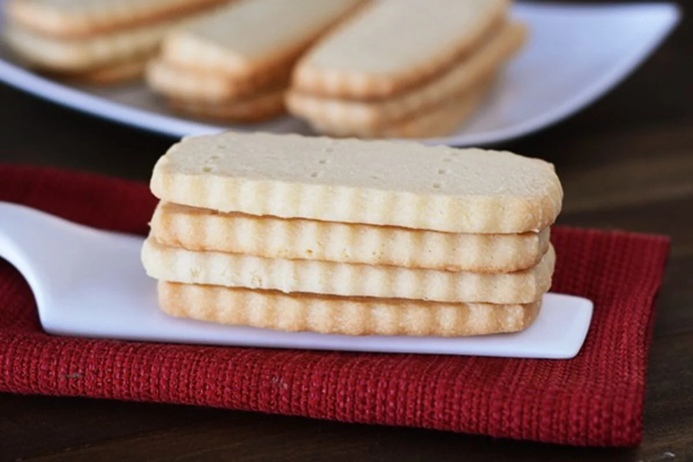

Scottish Shortbread

Description
These classic Scottish shortbread cookies are absolutely delicious and super easy to make! These melt-in-your-mouth cookies are the perfect companion for a cup of cocoa, but we won't judge if they don't last long enough to make some. A simple treat, Scottish shortbread is the perfect way to wind down after a long day!
Ingredients
- 4 sticks (452 g) salted butter, room temperature
- 1 tablespoon vanilla extract
- 1 1/2 cups (171 g) powdered sugar
- 2 1/2 cups (355 g) all-purpose flour
- 1 cup (114 g) cake flour
- 1/4 teaspoon salt
Instructions
- Beat the butter, sugar, vanilla, and powdered sugar with an electric mixer.
- Gradually add the all-purpose flour, cake flour, and salt and mix until just combined.
- Press the dough into a rectangle shape about 1 1/2 inches high on a parchment lined baking sheet. Cover with plastic wrap and refrigerate until firm.
- Cut the dough into 1/4 inch slices.
- Place the cut cookies about 1 inch apart on a parchment lined baking sheet. Prick each cookie a few times with the tines of a fork.
- Preheat the oven to 350 degrees F. Bake the cookies for 15-18 minutes until lightly golden around the edges.
- Let the cookies sit on the baking sheets for 2-3 minutes after removing from the oven before sliding to a cooling rack to cool completely.